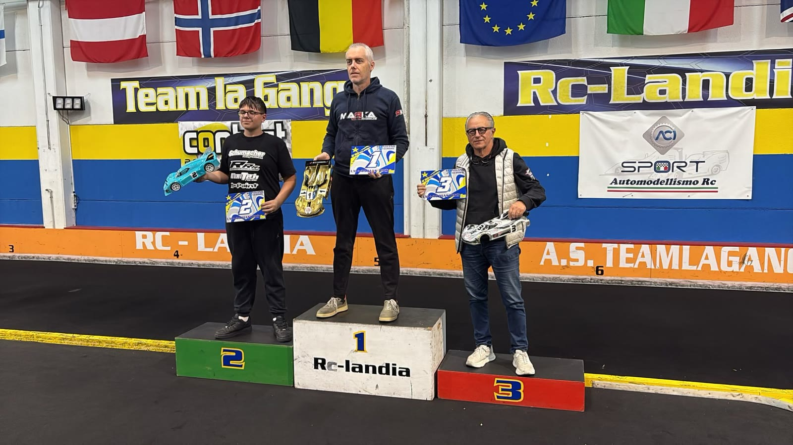

Un giro davanti a tutti
A RcLandia Carbognani vince tutto: pole, tre finali e sempre con un giro di vantaggio sugli altri. Alle sue spalle Bruno Rampini e Rabitti si giocano il secondo posto, finché ogni volta un errore stacca Rabitti.
Due settimane prima, alla prima prova, Carbognani aveva vinto partendo dalla pole, davanti a Bruno Rampini. A Scandiano si riparte esattamente da lì, e la domanda della giornata è una sola: qualcuno riuscirà a stargli vicino?
Prove e qualifiche
Quattro su quattro
Nelle prove libere il più rapido è Carbognani, davanti a Bruno Rampini e Lonardi. Nelle qualifiche il copione non cambia mai: Carbognani vince tutte e quattro le manche, Bruno Rampini è sempre secondo, Rabitti sempre terzo.
Il movimento è tutto più indietro, dove Roberto Rampini e Lonardi si scambiano il quarto posto da una manche all'altra. Nella terza Roberto Rampini si ferma dopo pochi giri, ma nella quarta torna in pista e chiude la qualifica davanti a Pederzini.
La griglia delle finali vede Carbognani in pole, poi Bruno Rampini, Rabitti, Roberto Rampini, Lonardi e Pederzini.
Finale 1
Il giro di vantaggio
Carbognani scatta davanti e non lo rivede più nessuno: giro dopo giro allunga, fino a doppiare tutti gli avversari. Dietro di lui Rabitti si incolla a Bruno Rampini nei primi giri, ma il secondo posto, poco alla volta, prende la strada di Rampini.
Al quarto giro Pederzini prende la boa dell'ultima S prima del traguardo e si ribalta. Lonardi è quarto dopo il via, ma a metà gara, nel traffico dei doppiaggi, perde il ritmo e Roberto Rampini ne approfitta per passarlo. Nel finale per Lonardi arriva anche un errore che lo manda a ruote all'aria; ripartito, da doppiato lascia strada a chi arriva da dietro.
Carbognani vince davanti a Bruno Rampini e Rabitti. Roberto Rampini è quarto, Lonardi quinto, Pederzini sesto.
Finale 2
Rabitti ci prova
La seconda finale è quella in cui Rabitti va più vicino al colpo. Per i primi giri gira appaiato a Bruno Rampini e a tratti è perfino più veloce di lui.
Al settimo giro però Rabitti sbaglia da solo, perde il contatto e da lì non riesce più a ricucire. Davanti Carbognani fa il bis, ancora con un giro su tutti.
L'ordine d'arrivo è identico alla prima finale. Lonardi sbaglia anche all'ultimo giro, ma riesce comunque a tagliare il traguardo.
Finale 3
Il tris
Nell'ultima finale Lonardi non prende il via. Rabitti riparte all'attacco di Bruno Rampini e nei primi giri gli resta a ridosso. All'undicesimo intoppa nel cordolo dell'ultima curva prima del traguardo, si ribalta e finisce sulla boa del traguardo. Quando il commissario lo rimette in pista, Rampini è ormai lontano.
Carbognani chiude la giornata con la sua finale migliore, Bruno Rampini è secondo e Rabitti terzo. Roberto Rampini firma il quarto posto in tutte e tre le finali, mentre Pederzini, alla sua prima gara sulla pista di Scandiano, chiude quinto e porta a termine tutte e tre le finali.
Pole, tre finali su tre e un giro di vantaggio su tutti ogni volta: la giornata è di Carbognani, che dopo due prove ha vinto entrambe le giornate partendo dalla pole e comanda il campionato davanti a Bruno Rampini. Rabitti, terzo in ogni finale, sale sul terzo gradino anche in classifica.
La sensazione è che per batterlo servirà qualcosa di più di un buon passo: servirà una giornata perfetta. Il prossimo capitolo dirà se qualcuno riuscirà a trovarla.
Il podio di giornata

PoleGuido Carbognani
Giro veloceGuido Carbognani · 13.682
- Bruno Rampini2
- Guido Carbognani1
- Enrico Rabitti3
4. Roberto Rampini · 5. Alessandro Lonardi · 6. Alex Pederzini